Keep your inspectors in the field.
We build custom software for underwriting inspection companies. It handles the work after the visit, from field photos to a finished report, and a person on your team approves every report before it goes out.
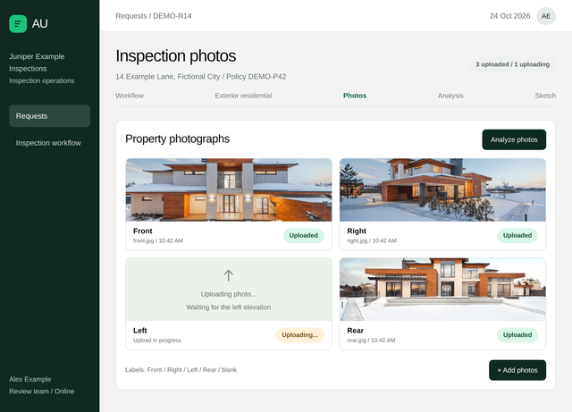
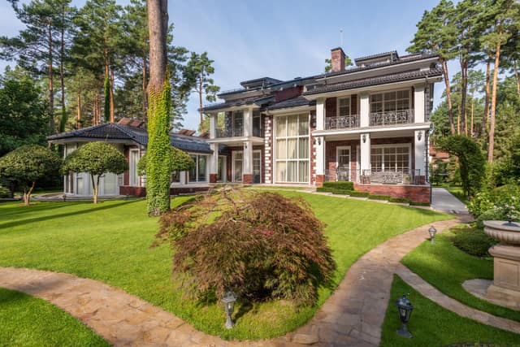
Every report. Every time.
Screens are illustrative, with fictional data and sample findings.
Your inspectors are doing desk work.
After every visit comes a second shift at a desk. That is time your best people are not in the field.
From the field to the review desk.
Photos to sort
Every visit comes back as a stack of photos to name, order and match to the right structure by hand.
Write-ups after hours
Observations get typed up at the end of the day, from notes and memory.
One report, many forms
The same findings are keyed again into each carrier’s own form and format.
Reviews that wait
Finished drafts sit in a queue until someone has time to read every line.
From field visit to carrier, without the desk work.
From original photographs to an editable draft. Your team reviews the answers and makes the final submission.
Photos come in
Inspectors upload from the field the way they do now. Photos keep their originals, with Front, Right, Left, Rear or blank labels.
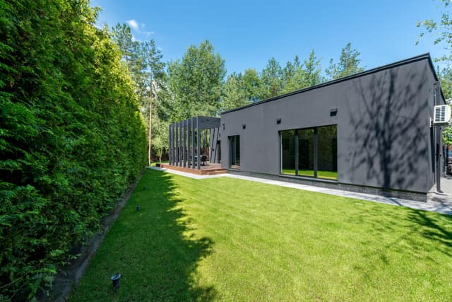
The report is drafted
Notes and photos become a first draft in the carrier’s own form, with each photo placed where it belongs.
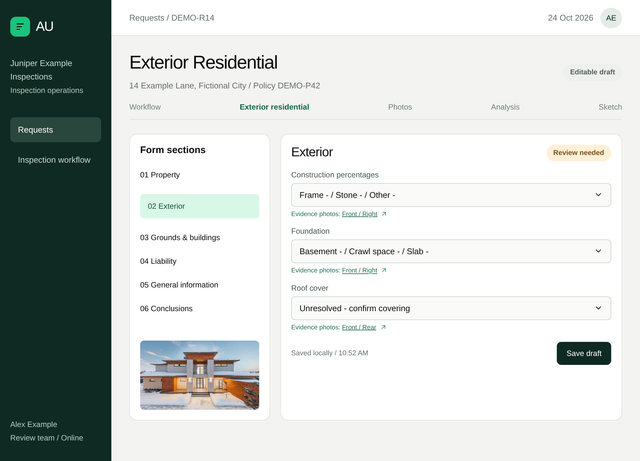
A person reviews it
Your reviewer reads the draft, edits anything and approves it. Nothing goes out without that sign-off.
It goes to the carrier
Approved answers and photos prepare a draft in the carrier’s portal. Your team checks it and makes the final submission.
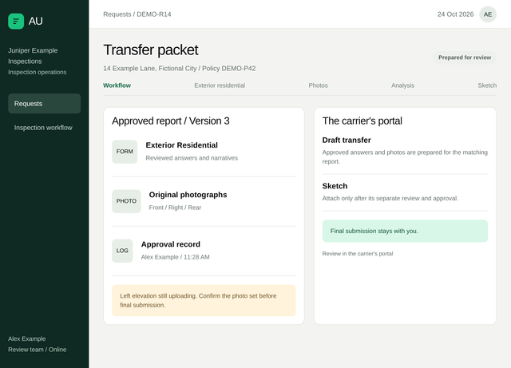
The work after the visit, handled.
Each piece is built for your company, around how your office already works.
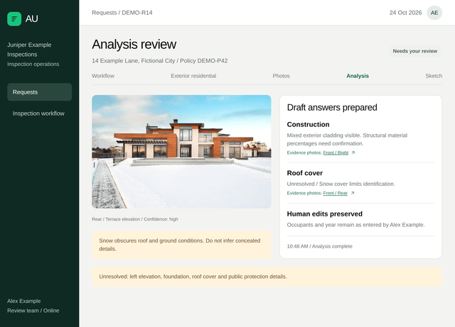
Photo analysis
Photos fill an editable draft with linked evidence. Unresolved questions stay visible, and your corrections are preserved.
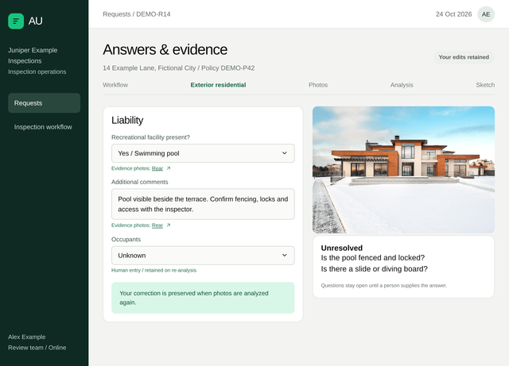
Report drafting
A first draft in the carrier’s form, written from the inspector’s notes and photos.
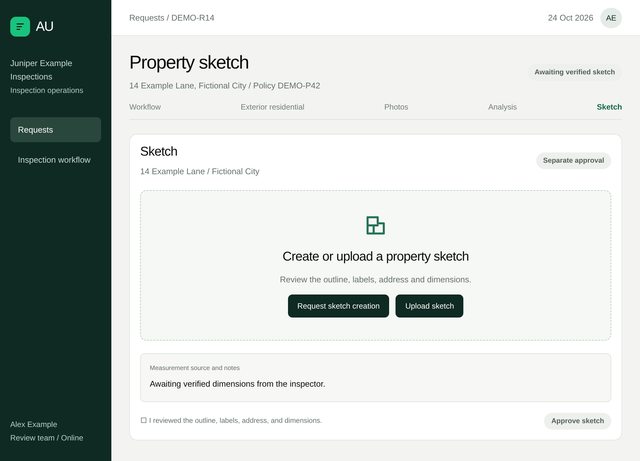
Sketch and review
Create or upload a property sketch, check its dimensions and approve it separately.
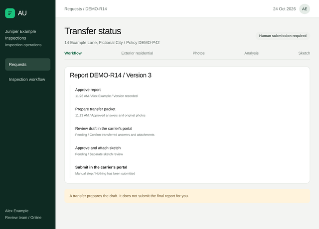
Delivery to the carrier
Approved answers and photos form a transfer packet. Final submission in the carrier’s portal stays with a person.
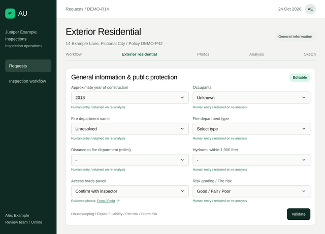
Built around your forms
Your report types, your carriers’ formats, your review steps. The software is built to fit them.
A person approves every report.
The software prepares the report. Your reviewer decides. Nothing reaches a carrier until someone on your team signs off.
- Read and edit every line of the draft
- Send a draft back to the inspector with a note
- Approve a version before preparing the transfer
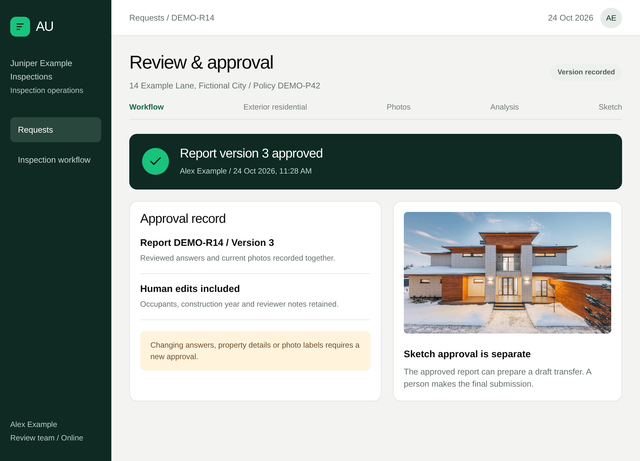
Built for inspection companies that report to carriers.
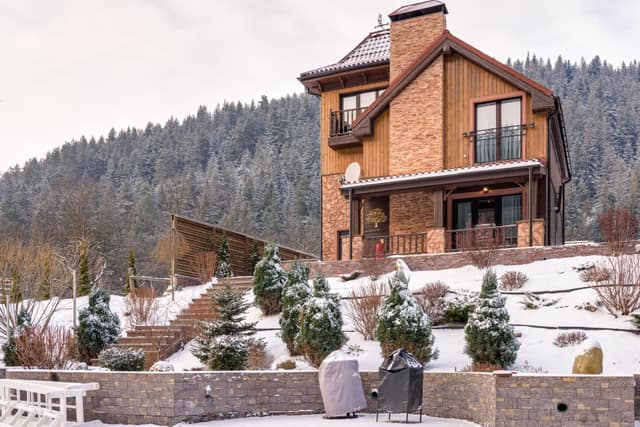
Underwriting inspection companies
Field inspectors, a review desk, and carriers waiting on reports.
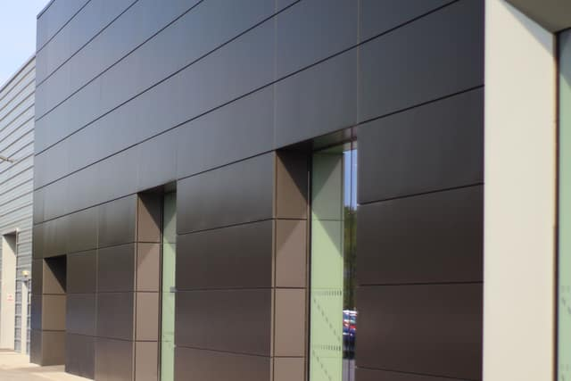
Loss control firms
Surveys and recommendations that have to follow each carrier’s format.
Growing inspection teams
Offices where report work grows with every inspector you add.
Questions
Does a person still approve every report?
Yes. The software prepares the report and your reviewer decides. Every draft can be edited or sent back, and nothing reaches a carrier until someone on your team approves it.
Do we have to change our forms or our carriers’ formats?
No. We build the software around the forms and formats you already deliver, including each carrier’s own.
Which reports can it handle?
We start with the report types that take your office the most time after the visit, then add others. Simple exterior reports and more involved inspections are both in scope.
Will it work with the systems we use now?
We build around them. The first conversation is about how a report moves through your office today, so what we propose fits it.
What does it cost?
It depends on what we build for you. We talk pricing once we understand your process.
How do we start?
Email sales@automateduwreports.com and walk us through how a report gets from the field to the carrier at your company.
Walk us through how a report gets from field to carrier.
Fifteen minutes is enough to see where the time goes.
Email sales@automateduwreports.comEmail us